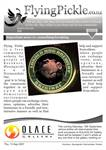
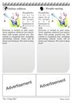
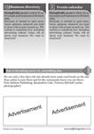

<?xml version="1.0" encoding="UTF-8"?><rss version="2.0"
	xmlns:content="http://purl.org/rss/1.0/modules/content/"
	xmlns:wfw="http://wellformedweb.org/CommentAPI/"
	xmlns:dc="http://purl.org/dc/elements/1.1/"
	xmlns:atom="http://www.w3.org/2005/Atom"
	xmlns:sy="http://purl.org/rss/1.0/modules/syndication/"
	xmlns:slash="http://purl.org/rss/1.0/modules/slash/"
	>

<channel>
	<title>Blogpaper manual &#8211; Web-to-Print &amp; Dynamic Imaging</title>
	<atom:link href="http://www.zetaprints.com/category/blogpaper/feed" rel="self" type="application/rss+xml" />
	<link>http://www.zetaprints.com</link>
	<description></description>
	<lastBuildDate>Mon, 01 Feb 2016 23:12:46 +0000</lastBuildDate>
	<language>en-US</language>
	<sy:updatePeriod>hourly</sy:updatePeriod>
	<sy:updateFrequency>1</sy:updateFrequency>
	<generator>https://wordpress.org/?v=4.4.1</generator>
	<item>
		<title>Case study: Flying Pickle</title>
		<link>http://www.zetaprints.com/blogpaper/blogpapers</link>
		<pubDate>Tue, 01 Apr 2008 08:20:53 +0000</pubDate>
		<dc:creator><![CDATA[vobla]]></dc:creator>
				<category><![CDATA[Blogpaper manual]]></category>

		<guid isPermaLink="false">/blogpaper/blogpapers/87</guid>
		<description><![CDATA[Blogs are re-defining the old media, but only a few attract a following. This case study demonstrate...]]></description>
				<content:encoded><![CDATA[<p><strong>Blogs are re-defining the old media, but only a few attract a following. This case study demonstrates how a locally-focused blog attracted a following, advertisers and turned itself into a print publication.<span id="more-87"></span></strong></p>
<h2>The blog</h2>
<p><a title="Flying pickle" href="http://flyingpickle.co.nz/"></a></p>
<p><a href="http://flyingpickle.co.nz">FlyingPickle.co.nz</a> was set up as a community blog by a small group of residents. The aim of the blog was to give the community a voice without the editorial bias of the local newspaper.<br />
The project was envisaged as a not-for-profit community effort with minimal amount of advertising to cover the costs.</p>
<p>Anyone living, working or just being connected to the area could join the blog and contribute some content, be it an announcement, garage sale ad, news or opinion.</p>
<h2>The tools</h2>
<p><strong>Blogging platform:</strong> <a href="http://wordpress.org">WordPress</a></p>
<p><strong>Publishing platform:</strong> <a href="../../../">ZetaPrints</a></p>
<p><strong>WordPress theme:</strong> <a href="http://www.wpthemesfree.com/">WP Themes Free</a></p>
<p><strong>Theme customization:</strong> <a href="http://www.zackdesign.biz/">Zack Design</a></p>
<p><strong>Hosting:</strong> <a href="http://www.hostican.com">Host I Can</a></p>
<p><strong>Setting up cost:</strong> <a href="http://flyingpickle.co.nz/2007/09/19/200-for-a-website-like-flying-pickle/">US$200</a></p>
<p><strong>Monthly cost:</strong> $7 (hosting)</p>
<p>Setting up was a very easy process, but did take a few iterations of trying different WordPress <a title="Web-to-print help: WordPress plugins" href="../../../help/wordpress-plugins-basic/" target="_self">plugins</a> to get the site right.</p>
<h2>The print edition</h2>
<p><strong>Coming out in print was the key to the success of the project.</strong> There are literally millions of blogs, but only a few get any readership. Trying to attract the local population to your blog may be a very difficult task. Trying to make them participate is even harder.<br />
Flying Pickle used ZetaPrints <a href="../../../">web-to-print software</a> to produce a print edition and take advertising.<br />
The most popular posts and comments were selected on Wednesday night, cut and pasted into the layout of an A5 flyer, printed on Thursday morning by a <a href="http://www.selfpublish.co.nz/">local printer</a> and distributed to approximately 2,300 letterboxes in the community by end of the day. Most people would pick it up on their return from work. Initially the distribution was done by supporters and volunteers, but was changed to paid distributors later on.</p>
<h2>Demographics</h2>
<p>The print edition was limited to 3 suburbs on the outskirts of Wellington, New Zealand. with approximate population of 6,500 people: <a href="http://maps.google.com/maps?f=q&hl=en&q=Korokoro,+Wellington,+New+Zealand&ie=UTF8&cd=2&geocode=0,-41.218815,174.865747&ll=-41.21608,174.868484&spn=0.017174,0.047035&t=h&z=15&iwloc=addr" target="_blank">Korokoro</a>, <a href="http://maps.google.com/maps?f=q&hl=en&geocode=&q=maungaraki,+Wellington,+New+Zealand&ie=UTF8&ll=-41.20901,174.883461&spn=0.017176,0.047035&t=h&z=15&iwloc=addr" target="_blank">Maungaraki</a> and <a href="http://maps.google.com/maps?f=q&hl=en&geocode=&q=normandale,+Wellington,+New+Zealand&ie=UTF8&ll=-41.20281,174.891636&spn=0.010591,0.020084&t=h&z=16&iwloc=addr" target="_blank">Normandale</a>. These are peaceful, sleepy, middle class suburbs with a handful of local shops, 3 schools, 3 kindys, reasonable broadband penetration, a good deal of home-based businesses and a local arts gallery. Every suburb has it&#8217;s own official monthly newsletter. 2 free weekly newspapers had much much larger coverage.</p>
<h2>Blog popularity and traffic</h2>
<p>At first, the website was advertised on community noticeboards and in several shop windows. It scored several hundred hits from curious locals. The first print edition resulted in a surge of traffic, posts and comments from the residents. <em> </em></p>
<p>NOTE: <em>The figures below are for 3 months only.</em></p>
<p><a title="Flying Pickle traffic, Oct 2007" href="../../../wp-content/uploads/2008/04/daily_usage_200710.png"></a><a title="Flying Pickle traffic Nov 2007" href="../../../wp-content/uploads/2008/04/daily_usage_200711.png"></a><a title="Flying Pickle traffic Dec 2007" href="../../../wp-content/uploads/2008/04/daily_usage_200712.png"></a><br />
<strong>Users registered:</strong> 126<br />
<strong>Users posted:</strong> 105<br />
<strong>Comments posted:</strong> 293<br />
<strong>Total population:</strong> ~6,500<br />
<strong>Participation rate:</strong> 6% of the total local population<br />
<strong>Pages served:</strong> ~11,000 per month</p>
<table style="font-size: 0.8em;" border="0">
<tbody>
<tr>
<th colspan="11" align="center">Summary by Month</th>
</tr>
<tr>
<th rowspan="2" align="left">Month</th>
<th colspan="4" align="center">Daily Avg</th>
<th colspan="6" align="center">Monthly Totals</th>
</tr>
<tr>
<th align="center">Hits</th>
<th align="center">Files</th>
<th align="center">Pages</th>
<th align="center">Visits</th>
<th align="center">Sites</th>
<th align="center">KBytes</th>
<th align="center">Visits</th>
<th align="center">Pages</th>
<th align="center">Files</th>
<th align="center">Hits</th>
</tr>
<tr>
<td>Dec 2007</td>
<td align="right">992</td>
<td align="right">613</td>
<td align="right">384</td>
<td align="right">110</td>
<td align="right">1155</td>
<td align="right">437190</td>
<td align="right">3440</td>
<td align="right">11908</td>
<td align="right">19012</td>
<td align="right">30775</td>
</tr>
<tr>
<td>Nov 2007</td>
<td align="right">1381</td>
<td align="right">833</td>
<td align="right">473</td>
<td align="right">121</td>
<td align="right">1238</td>
<td align="right">668056</td>
<td align="right">3648</td>
<td align="right">14200</td>
<td align="right">25010</td>
<td align="right">41433</td>
</tr>
<tr>
<td>Oct 2007</td>
<td align="right">1978</td>
<td align="right">1162</td>
<td align="right">550</td>
<td align="right">131</td>
<td align="right">709</td>
<td align="right">372212</td>
<td align="right">1709</td>
<td align="right">7160</td>
<td align="right">15114</td>
<td align="right">25716</td>
</tr>
<tr>
<th colspan="6" align="left">Totals</th>
<th align="right">2375035</th>
<th align="right">19237</th>
<th align="right">62605</th>
<th align="right">101876</th>
<th align="right">165159</th>
</tr>
</tbody>
</table>
<p><strong>We believe it is an astonishing result for a tiny hyper-local blog</strong> launched by people without any special status in the community. Such outcome with sustained traffic would not be possible without support of the <a href="http://flyingpickle.co.nz/print-edition/">print edition</a>.</p>
<h2>Recognition in the community</h2>
<p>There were several <strong>positive indicators</strong> to state that the publication was well respected:</p>
<ol>
<li>no shortage of volunteers to deliver a hundred or so copies to their street</li>
<li>many residents were taking the copy into their hands, rather than waiting for it to land in the letterbox with all the other junk mail</li>
<li>deliverers always asked residents if they wanted a copy &#8211; very few said &#8220;no&#8221;</li>
<li>other local publications started printing the content from the website</li>
<li>advertisers were happy to place their ads in there</li>
</ol>
<h2>Lessons and challenges</h2>
<p>We identified a number of difficulties facing any similar project.</p>
<ul>
<li>Starting a <strong>commercial publication</strong> may not get such a wide support FlyingPickle enjoyed due to its not-for-profit status.</li>
<li><strong>Editorial policies</strong> should be liberal enough to foster an open discussion and variety of opinions.</li>
<li>Be prepared to <strong>hostile behavior</strong> by those disagreeing with the content.</li>
<li><a href="../../../blogpaper/blogpaper-advertising/"><strong>Preparing advertising</strong></a> takes a lot of time and effort, often making it uneconomical, unless the process is automated.</li>
<li><a href="../../../blogpaper/blogpaper-layout/"><strong>Preparing print-ready files</strong></a> requires special tools, knowledge and time, unless the process is automated.</li>
<li>Gaining trust and recognition in the community is <strong>critical to attracting local advertisers</strong>.</li>
<li><strong>Active news gathering</strong> brings the publication to a completely new quality level.</li>
</ul>
<p>None of these challenges are too hard to overcome. We have to note, though, that projects of this type need to find <strong>their own niche</strong> to succeed, be it a topical publication posted to certain type of professionals or just a community blog like Flying Pickle.<br />
ZetaPrints assisted the project in two key areas: <a title="Web-to-print for advertising" href="../../../blogpaper/blogpaper-advertising/"><strong>advertising</strong></a> and <a title="Web-to-print for layouts" href="../../../blogpaper/blogpaper-layout/"><strong>print layout</strong></a> work.</p>
<h2>Conclusion</h2>
<p><strong><a href="http://flyingpickle.co.nz">FlyingPickle</a> experiment proved it is entirely possible for a blogger to produce a regular print edition and attract advertising as a commercial venture.</strong> One of the strengths of the approach was to minimize the pre-press effort needed to prepare the print edition and adverts. Use of ZetaPrints technology made it possible for the whole project to be run by one person as a part-time activity.</p>
<p>Read out <strong><a title="Web-to-print for blogpapers" href="../../../blogpaper/start-a-blogpaper/104/">Blogpaper Manual</a></strong> to get started.</p>
<p></p>
]]></content:encoded>
			</item>
		<item>
		<title>Blogpaper advertising</title>
		<link>http://www.zetaprints.com/blogpaper/blogpaper-advertising</link>
		<pubDate>Tue, 01 Apr 2008 08:20:37 +0000</pubDate>
		<dc:creator><![CDATA[vobla]]></dc:creator>
				<category><![CDATA[Blogpaper manual]]></category>

		<guid isPermaLink="false">/blogpaper/blogpaper-advertising/95</guid>
		<description><![CDATA[Launching your own blog in print is a challenging project. One of the difficulties you may encounter...]]></description>
				<content:encoded><![CDATA[<p><strong>Launching your own blog in print is a challenging project. One of the difficulties you may encounter is dealing with print advertising.<span id="more-95"></span></strong></p>
<p> </p>
<h2>Print advertising reality</h2>
<p>Running ads on a blog is a trivial process. Google AdSense, DoubleClick or any other advertising network will provide you with ads from advertisers at a market rate. Print advertising is different. Print advertising in a blogpaper is even more specific.</p>
<ul>
<li>Do your own sales</li>
<li>Help advertisers with their ad designs</li>
<li>Remind advertisers to place an ad before the due date</li>
<li>Collect payments</li>
</ul>
<p>None of these would be your worry in an online-only edition. On the upside, you can command a much higher price in print than what AdSense would ever offer you. Also, ZetaPrints <a href="../../../">web-to-print software</a> can fully automate most of the processes to help you concentrate on the content of the blogpaper.</p>
<h2>Sales</h2>
<p>The sales approach really depends on the focus of your blogpaper. In any case, your advertisers will be businesses and organisations you can identify and approach directly. Long term advertising deals will save you a lot of time, but a constant stream of small advertisers can be much more profitable.</p>
<p>Unlike online advertising, print has a publishing deadline. You do need to get ads ready and approved before the due date. In reality, casual advertisers need constant reminders and courtesy phone calls to make sure the ads are ready on time. ZetaPrints helps you minimize this effort with our FREE reminder service.</p>
<h2>Designs</h2>
<p>Do not expect your advertisers to come to you with their ads in a print-ready format. On the contrary, most will expect you to provide them with an attractive ad design at no additional cost. Usually it takes several design-proof-design iterations before the client is fully satisfied. Many businesses require changes to their ads on a regular basis (specials, new stock, etc). ZetaPrints helps you minimize this time consuming activity as well.</p>
<h2>Problems solved</h2>
<p><strong>ZetaPrints provides you with a simple and powerful <em>web-to-print platform</em> to help with sales and design tasks. Preparing page layouts and advetisements manually requires staff and infrastructure. We offer you an agile solution with pay-as-you-go model.</strong></p>
<h3>For casual advertisers</h3>
<p>Our extensive <a title="Newspaper ads designs and templates" href="http://zetaprints.com/?page=templates;Keywords=Print%20advertisement">design collection</a> is a good starting point for your casual advertisers to choose a design, customize it with their name, products, specials etc. The collection consists of designs submitted by an open community of graphic designers, so there is always something fresh to choose from. It is constantly growing in size and quality.</p>
<p>Your advertisers would find a design they like, customize it and you get a print-ready PDF file to insert into your print edition. You will be charged $5 for the design (passed onto the designer as royalties) + $1.7 for ad booking (<a title="Web-to-print pricing" href="../../../publications/web-to-print-pricing/">full pricing</a>).</p>
<p>In case your advertiser can&#8217;t find a suitable design just let us know and we will inform the designers about the need. Alternatively, you can commission the design to a designer with most suitable templates already on the site. Usually it is a matter of adjusting an existing design.</p>
<h3>For regular advertisers</h3>
<p>Regular advertisers may run the same ad over a long period of time or require constant changes. It is very easy to set up their templates on ZetaPrints and let them change their ads themselves any time they need. You download a PDF file to insert into your print edition. The setting up process can be done by you or outsourced to any designer from our online community. The cost is $1.7 per ad booking (<a title="Web-to-print pricing" href="../../../publications/web-to-print-pricing/">full pricing</a>).</p>
<h3>Payments collection</h3>
<p>ZetaPrints can help you collect payments from your advertisers when they prepare the artwork. The advertising cost will be added to their total bill. They will not be able to access their PDF files until the payment is completed. This is a FREE service. We charge no commission and all payments go <a title="Web-to-print payments collection" href="../../../help/prices-and-payments/">directly to your account</a>.</p>
<h3>Deadline reminders</h3>
<p>We have a complimentary service to remind your advertisers about your publishing deadlines. Reminders are served via email (free) or text messages (rates vary). We also remind you if they are going to miss the deadline so you can contact them before it&#8217;s too late.</p>
<h2>Competition</h2>
<p>It is always better to be a niche player with no direct competition. The reality may be different. Your strengths can be the very open and social nature of your publication, ease of advertising with you and extremely low costs of production. <strong></strong></p>
<p><strong><a title="Web-to-print case study" href="../../../blogpaper/blogpapers/">Flying Pickle</a> became possible only because we slashed their costs and pre-press activity to the minimum.</strong></p>
]]></content:encoded>
			</item>
		<item>
		<title>Blogpaper printing</title>
		<link>http://www.zetaprints.com/blogpaper/blogpaper-printing</link>
		<pubDate>Tue, 01 Apr 2008 08:20:20 +0000</pubDate>
		<dc:creator><![CDATA[vobla]]></dc:creator>
				<category><![CDATA[Blogpaper manual]]></category>

		<guid isPermaLink="false">/blogpaper/blogpaper-printing/96</guid>
		<description><![CDATA[Printing your blog as a regular publication is easy, as long as you have what to print and in the ri...]]></description>
				<content:encoded><![CDATA[<p><strong>Printing your blog as a regular publication is easy, as long as you have what to print and in the right format.<span id="more-96"></span></strong></p>
<h2>Small runs &#8211; digital printing</h2>
<p>Anything up to 6,000 copies can be printed on a laser printer with excellent quality and at low cost. The prices on laser printers and ink are falling as the technology improves. You may want to purchase your own laser printer or outsource it to a printing company. <a title="Web-to-print case study" href="../../../blogpaper/blogpapers/">Flying Pickle</a>, our case study subject, outsourced all printing and folding to local publishing company <a title="Self-publishing company" href="http://www.selfpublish.co.nz/">First Edition Publishing</a> at a cost of less than $100 for 2,300 copies with exceptional quality.</p>
<p><strong>Digital color printing</strong> is still quite expensive and may not be as cost effective as b/w, but many advertisers are prepared to pay a premium for full color ads that stand out.</p>
<p><strong>Advantages</strong>: high quality, fast turnaround (hours), no set up costs, color matching (spot colors) at no additional cost<br />
<strong>Disadvantages</strong>: not suitable for large quantities</p>
<h2>Offset printing</h2>
<p>6,000 or more copies may be enough to justify set up costs associated with offset printing. This is the traditional technology to produce newspapers, books, magazines, etc.</p>
<p><strong>Advantages</strong>: the cost grows only marginally with the volumes, full color, cheaper and thinner paper<br />
<strong>Disadvantages</strong>: set up cost may bite on shorter runs, longer turnaround time (can be days), possible quality issues</p>
<h2>Trimming, collating, folding, stapling, creasing</h2>
<p>The choice of finishing options is near infinite. They all cost money and may add substantially to the overall costs.</p>
<ul>
<li>Trimming &#8211; cutting the pages to size</li>
<li>Collating and folding &#8211; sorting pages in order and folding them together</li>
<li>Creasing &#8211; making a nice groove where the pages are folded</li>
</ul>
<h2>Minimizing costs</h2>
<p>Outsourcing can be expensive if you don&#8217;t do your homework. There are ways to minimize cost without compromising the quality.</p>
<h3>Mix and match printing technologies</h3>
<p>Not all of the pages need to be printed using the same technology. Ads can be printed on a special full color insert using offset printing well in advance and the content printed on a b/w laser printer.<br />
Ads can be printed in full color using offset printing with the content overprinted on a b/w laser printer.</p>
<h3>Provide print-ready file</h3>
<p>The files supplied to your printer need to conform to certain specifications to come out right. If something looks OK on the screen it doesn&#8217;t mean it will look good when printed. <strong>ZetaPrints <a href="../../../">web-to-print software</a> produces print-ready files and warns you of any issues.</strong></p>
<h3>Regular runs</h3>
<p>A printing company&#8217;s business model is essentially based on utilization of their equipment + additional services. You can negotiate a much better deal if you provide print ready files on a guaranteed schedule with guaranteed volumes. The printer will make sure the equipment is ready for you.</p>
]]></content:encoded>
			</item>
		<item>
		<title>Blogpaper delivery</title>
		<link>http://www.zetaprints.com/blogpaper/blogpaper-delivery</link>
		<pubDate>Tue, 01 Apr 2008 08:19:58 +0000</pubDate>
		<dc:creator><![CDATA[vobla]]></dc:creator>
				<category><![CDATA[Blogpaper manual]]></category>

		<guid isPermaLink="false">/blogpaper/blogpaper-delivery/97</guid>
		<description><![CDATA[Blogpaper needs a physical delivery channel. The whole purpose is to put it into the hands of a read...]]></description>
				<content:encoded><![CDATA[<p><strong>Blogpaper needs a physical delivery channel. The whole purpose is to put it into the hands of a reader. Your options depend on where you are, where your readers are and what services are available in your area.<span id="more-97"></span></strong></p>
<h2>Volunteers, friends and family</h2>
<p>This is how our case study subject, <a title="Web-to-print case study" href="../steve/blogpaper/blogpapers/">Flying Pickle</a>, started out. Their web-to-print publication was community-orientated and not-for-profit. They had no problem finding people to deliver 100 &#8211; 300 copies to letterboxes around them. For many it was an excuse to get out and do a bit of walking in the fresh air.</p>
<h2>Pick-up points</h2>
<p>Setting up baskets or boxes with few hundred copies in supermarkets, petrol stations, shops, malls and other public places is a good and inexpensive option. Advertisers may not rate your web-to-print publication as high as the one delivered directly to letterboxes.</p>
<h2>Paid distributors</h2>
<p>Flying Pickle switched to paid distributors as soon as they got some cashflow. The timing and reliability of the service improved. Most residents were picking up the paper on the same day on the way back from home.</p>
<h2>Postal delivery services</h2>
<p>Postal authorities usually have special services for delivering un-addressed mail, as long as it conforms to their junk-mail policies. This may be a slower and more expensive option. If your readers do not live in a compact area it may be the only viable one.</p>
<h2>Alternative delivery services</h2>
<p>Commercial companies delivering junk mail in your area will be happy to include your blogpaper in the pile. The obvious disadvantage is the contempt it will be treated with. Letterboxes with &#8220;no junk mail&#8221; labels may never get your publication.</p>
]]></content:encoded>
			</item>
		<item>
		<title>Blogpaper layout</title>
		<link>http://www.zetaprints.com/blogpaper/blogpaper-layout</link>
		<pubDate>Tue, 01 Apr 2008 08:19:33 +0000</pubDate>
		<dc:creator><![CDATA[vobla]]></dc:creator>
				<category><![CDATA[Blogpaper manual]]></category>

		<guid isPermaLink="false">/blogpaper/blogpaper-layout/98</guid>
		<description><![CDATA[Blog layouts do not translate well into print. A well-constructed and attractive layout of the print...]]></description>
				<content:encoded><![CDATA[<p><strong>Blog layouts do not translate well into print. A well-constructed and attractive layout of the print edition is absolutely necessary.<span id="more-98"></span></strong></p>
<p></p>
<h2>Desktop publishing software</h2>
<p>Your choice of DTP (Desktop Publishing) applications like <a href="http://www.adobe.com/products/indesign/">Adobe InDesign</a>, <a href="http://www.quark.com/">Quark Xpress</a>, <a href="http://www.corel.com/">CorelDRAW</a> or <a href="http://www.scribus.net/">Scribus</a> (free) are suitable for users with design skills to gain extra bit of control of the output. Consider these up-front expenses:</p>
<ul>
<li><strong>Software</strong>: $200 &#8211; $2,000</li>
<li><strong>Books</strong>: $50</li>
<li><strong>Training</strong>: $200 &#8211; $2,000</li>
<li><strong>Fonts</strong>: $100 &#8211; $5,000</li>
<li><strong>Clipart and stock photos</strong>: $100 &#8211; $500</li>
</ul>
<p>We recommend desktop publishing to users confident in their design abilities and willing to spend time doing the layout work themselves. DTP doesn&#8217;t prevent you from using ZetaPrints for ad booking. Placing ads produced by our web-to-print into the layout is as easy as &#8220;drag-and-drop&#8221;.</p>
<h2>ZetaPrints layout services</h2>
<p>ZetaPrints <a href="../../../">web-to-print system</a> provides a simple interface to prepare blogpaper using layout templates in a semi-automated process. The full automation is not possible due to the fundamental differences between web and print:</p>
<ul>
<li>Print publication has limited space</li>
<li>Print has fixed layout</li>
<li>Readers expect to see better layout, grammar and style in print than on a website</li>
</ul>
<p>A simple script added to your blog will transfer your text and photos into the layout template. The content will need to be adjusted to make sure it fits the layout. You may need to add or remove some text, re-touch photos and do other minor adjustment. A few iterations of changes and refreshing the preview image should produce a satisfactory result. The print-ready output file is generated within seconds after pressing the <em>Finalise </em>button and costs only $1.7. It is a much cheaper alternative to DTP.</p>
<h2>Layout designs</h2>
<p>You can design the layout yourself using DTP software or commission the work to a designer. Several page layouts will be needed to accommodate different content combinations.</p>
<p>ZetaPrints offers a choice of options with our layout services:</p>
<ul>
<li>Use layouts from our <a title="Graphic design templates" href="http://zetaprints.com/?page=templates">design collection</a></li>
<li>Tell us what layouts you are looking for and we&#8217;ll inform the design community about the need</li>
<li>Commission a layout template to a member of our design community</li>
</ul>
<p>Once the layout template is on the site it is available to you 24/7 through the web browser at a the standard price of $1.7 per order (<a title="Web-to-print pricing" href="../../../publications/web-to-print-pricing/">full pricing</a>).</p>
<h2>Recommendations</h2>
<p>ZetaPrints layout services are limited in functionality compared to DTP software.</p>
<p><strong>We recommend non-designers to use ZetaPrints layouts, but more design orientated bloggers may be better off using DTP software.</strong></p>
<p>Our aim is to make the process of output preparation quick and inexpensive as much as possible. Start out with our service and move to DTP later, if needed.</p>
]]></content:encoded>
			</item>
		<item>
		<title>Start a blogpaper</title>
		<link>http://www.zetaprints.com/publications/start-a-blogpaper</link>
		<pubDate>Tue, 01 Apr 2008 08:19:03 +0000</pubDate>
		<dc:creator><![CDATA[vobla]]></dc:creator>
				<category><![CDATA[Blogpaper manual]]></category>
		<category><![CDATA[Publications]]></category>

		<guid isPermaLink="false">/blogpaper/start-a-blogpaper/104</guid>
		<description><![CDATA[You have all the tools to start a blog in minutes. ZetaPrints gives you tools to give your blog a pr...]]></description>
				<content:encoded><![CDATA[<p><strong>You have all the tools to start a blog in minutes. ZetaPrints gives you tools to give your blog a print edition and engage all the readers you&#8217;ve been missing in your online-only edition.<span id="more-104"></span></strong></p>
<ol>
<li>Read our <strong><a title="Web-to-print case study" href="../../../blogpaper/blogpapers/">case study about a hyper-local blog</a></strong> that successfully tried this business model.</li>
<li>Read our one-page crash-courses on <strong><a href="../../../blogpaper/blogpaper-advertising/">print advertising</a></strong>, <strong><a href="../../../blogpaper/blogpaper-printing/">print production</a></strong>, <strong><a href="../../../blogpaper/blogpaper-delivery/">distribution</a></strong> and <strong><a href="../../../blogpaper/blogpaper-layout/">layout preparation</a></strong>.</li>
<li>Think through your strategy and feel free to bounce your ideas off us.</li>
<li>Start a blog, if you don&#8217;t have one yet.</li>
<li>Register a sub-domain for your <a title="web-to-print custom domain name" href="../../../help/custom-access-url/">ad booking portal</a>.</li>
<li><a href="../../../publications/web-to-print-signup/">Sign up to ZetaPrints</a> as a printer.</li>
<li>Login to Zetaprints using your sub-domain and <a title="Web-to-print customisation" href="../../../help/branding-and-customisation/">customize your interface</a>.</li>
</ol>
<p><strong>Please, <a href="mailto:support@zetaprints.com">contact us</a> to tell about your plans. We&#8217;ll love to help you!</strong></p>
<p>Feel free go on and <a title="Sign up to web-to-print" href="../../../publications/web-to-print-signup/">get the ball rolling</a>. There is no cost involved for you as far as ZetaPrints is concerned &#8211; enjoy our free trial.</p>
<p></p>
<p></p>
]]></content:encoded>
			</item>
	</channel>
</rss>

<!-- Localized -->